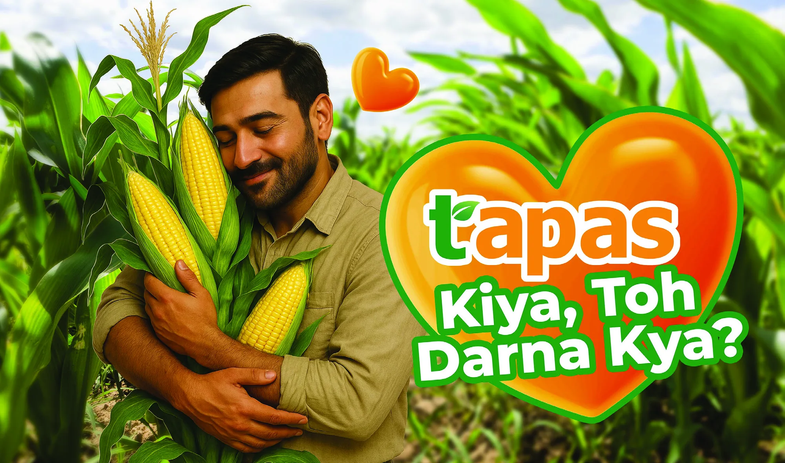
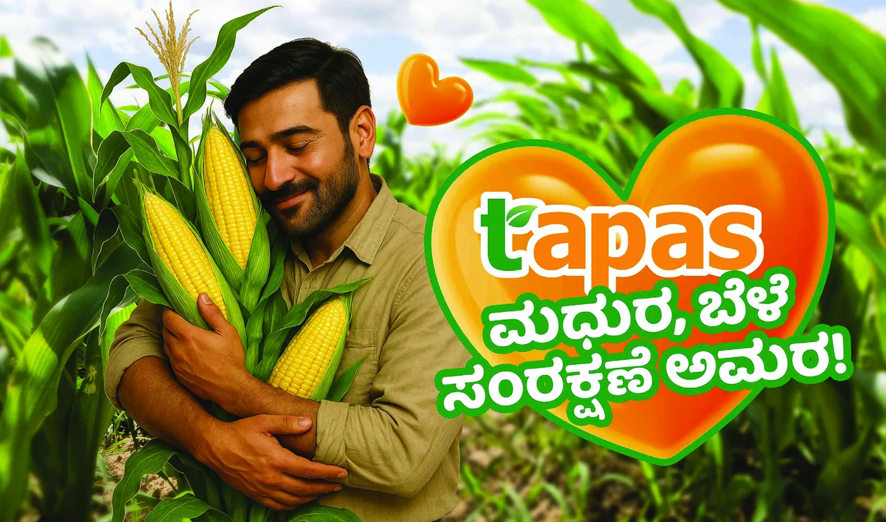
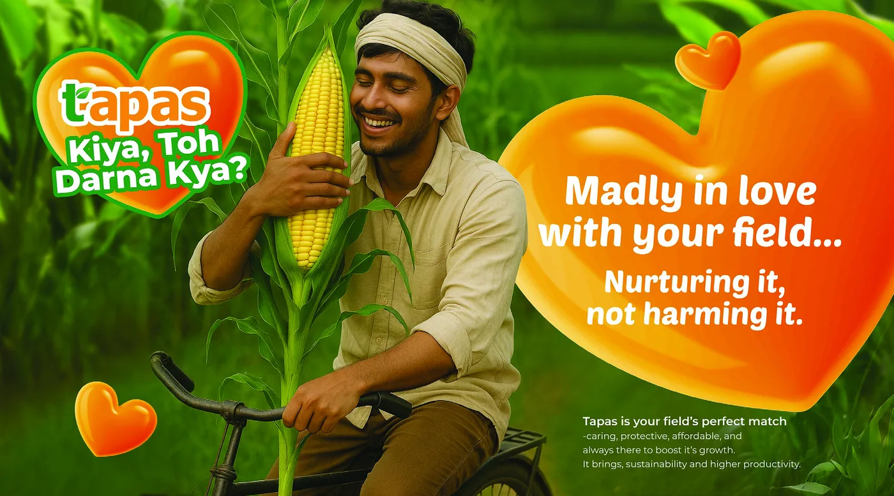
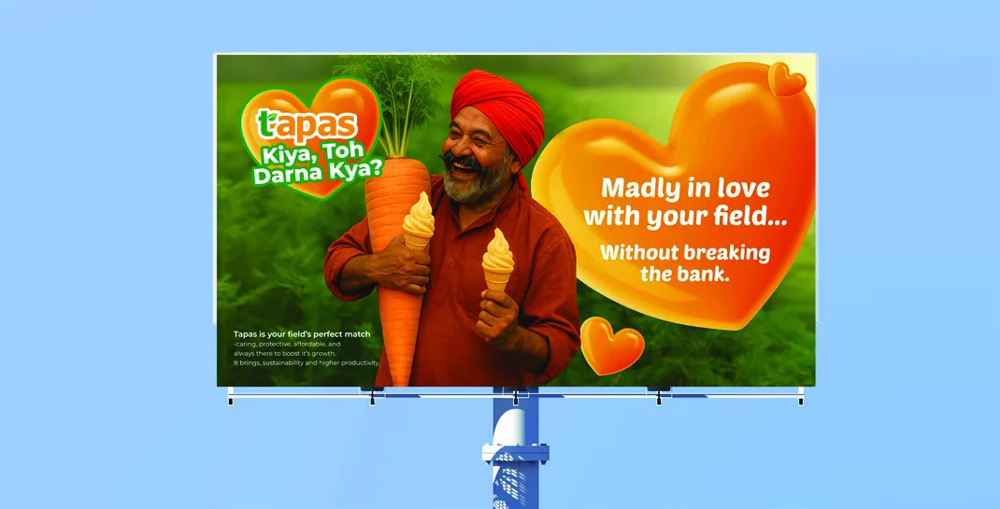
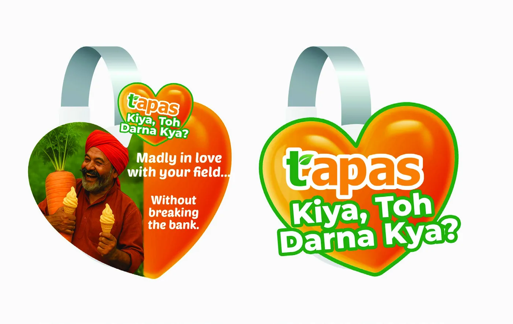
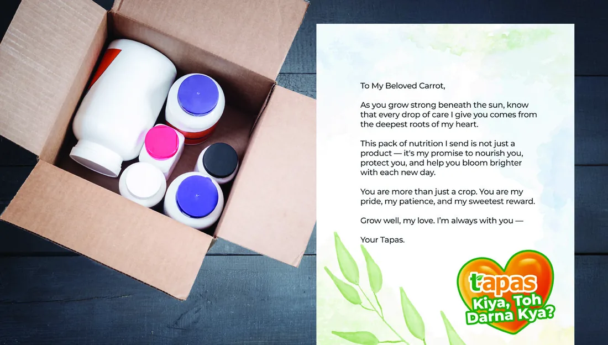
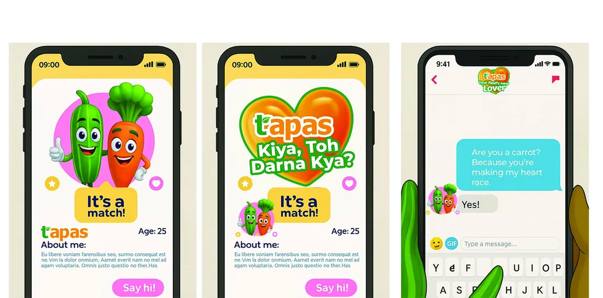
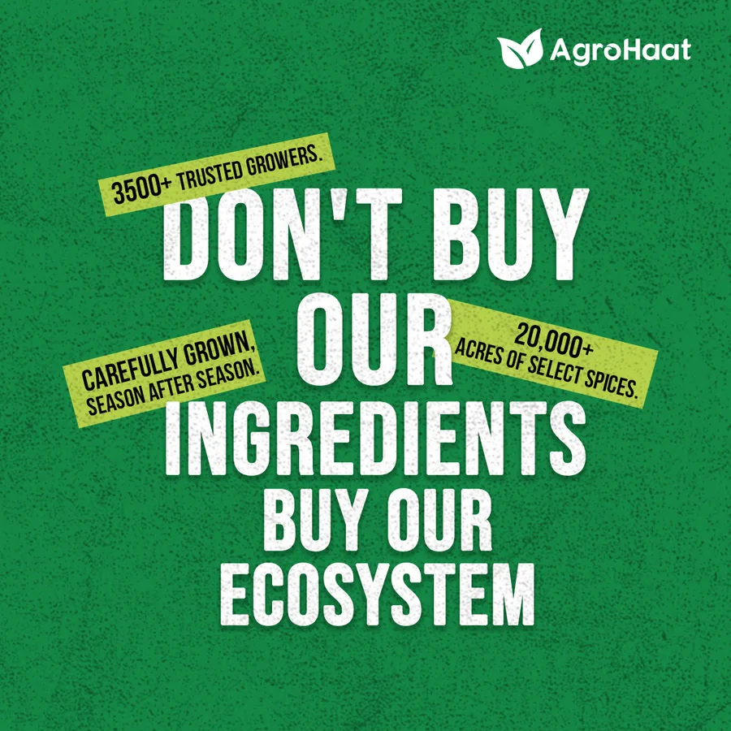

Tapas by BigHaat · 2025Tapas
Kiya, Toh
Darna Kya?
A farmer-first brand campaign for Tapas that put a heart in an agri-retail store, and turned a category of features into a conversation.

Tapas is BigHaat's in-house agri-input brand: bio-stimulants, micronutrients, plant growth regulators and organic solutions, fighting for shelf space against legacy brands twice its age. The brand note was clear about who buys it: farmers in joint families, who decide as a household and buy on trust, visible proof and what a neighbour says.
We started with the category. A market and competitor audit of the top agri brands, and a read of every campaign they were running. The finding was blunt: everyone was selling features, nobody had a brand idea, and the farmer had heard all of it before. So we wrote three routes off that gap, then took them to farmers, surveyed customers from the previous quarter and tested the ideas rather than debating them in a room.
Kiya, Toh Darna Kya?
The third route won, not because it was the most disruptive but because it was the one farmers actually talked about when we tested it. The idea was simple: a farmer loves his field the way you love a person. He worries about it at night. He wants the best for it. He cannot quite leave it alone. So we put a heart in an agri-retail store. 'If you have loved, why fear?' The heart did the work: people stopped to ask what it was. A candy? A dating app? A campaign that gets asked about is a campaign that gets repeated at the counter. It travelled through print and hoardings, retail, a delivery box that arrived as a love letter ('To my beloved carrot'), and an app animation that behaved like a dating app: it's a match.
- Research and ideation: category audit, competitor analysis of the top agri brands, a survey of last quarter's customers, and three routes built on the insight that followed.
- Concept testing with farmers across markets, which is how the third route, Kiya, Toh Darna Kya, came out in front.
- Campaign architecture: an 85-slide deck covering the brief, competitor audit, brand gap, three tested creative routes, and their rollout.
- Master key visuals: the farmer and the heart lock-up, rebuilt in English and the regional markets rather than transliterated.
- Print, outdoor and trade: hoarding and newspaper layouts, a three-line promise system, standee, signage, photobooth, mobile banners and stationery.
- The love-letter delivery box: a nutrition pack that arrives with a letter written to the crop, signed 'Your Tapas'.
- Digital and activation: #mycropmylove and #tapasmysoil prompts, the dating-app animation, and product promos built around crop stages.






In-House Brand: Tapas by BigHaat. Campaign creatives reproduced with permission.
Don't Buy Our Ingredients
AgroHaat by BigHaat · 2025